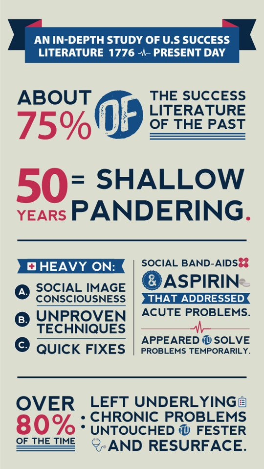
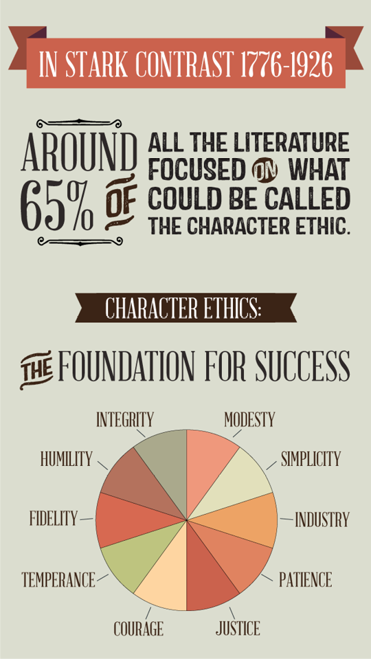
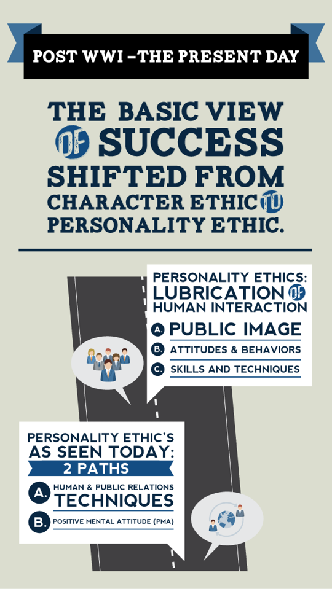
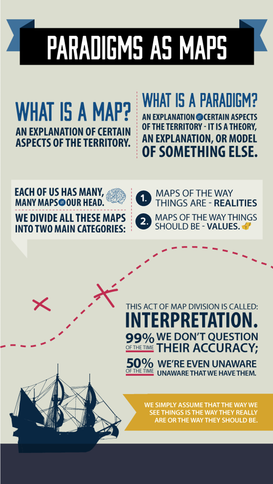
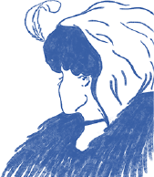
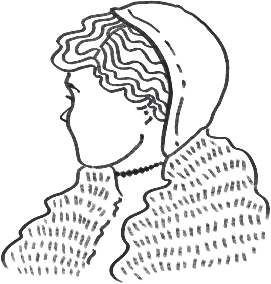
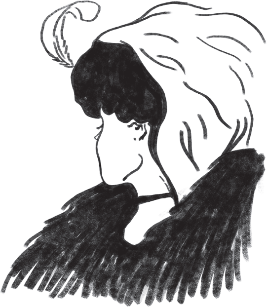

There is no real excellence in all this world which can be separated from right living.
DAVID STARR JORDAN
In more than 25 years of working with people in business, university, and marriage and family settings, I have come in contact with many individuals who have achieved an incredible degree of outward success, but have found themselves struggling with an inner hunger, a deep need for personal congruency and effectiveness and for healthy, growing relationships with other people.
I suspect some of the problems they have shared with me may be familiar to you.
I’ve set and met my career goals and I’m having tremendous professional success. But it’s cost me my personal and family life. I don’t know my wife and children anymore. I’m not even sure I know myself and what’s really important to me. I’ve had to ask myself—is it worth it?
I’ve started a new diet—for the fifth time this year. I know I’m overweight, and I really want to change. I read all the new information, I set goals, I get myself all psyched up with a positive mental attitude and tell myself I can do it. But I don’t. After a few weeks, I fizzle. I just can’t seem to keep a promise I make to myself.
I’ve taken course after course on effective management training. I expect a lot out of my employees and I work hard to be friendly toward them and to treat them right. But I don’t feel any loyalty from them. I think if I were home sick for a day, they’d spend most of their time gabbing at the water fountain. Why can’t I train them to be independent and responsible—or find employees who can be?
My teenage son is rebellious and on drugs. No matter what I try, he won’t listen to me. What can I do?
There’s so much to do. And there’s never enough time. I feel pressured and hassled all day, every day, seven days a week. I’ve attended time management seminars and I’ve tried half a dozen different planning systems. They’ve helped some, but I still don’t feel I’m living the happy, productive, peaceful life I want to live.
I want to teach my children the value of work. But to get them to do anything, I have to supervise every move… and put up with complaining every step of the way. It’s so much easier to do it myself. Why can’t children do their work cheerfully and without being reminded?
I’m busy—really busy. But sometimes I wonder if what I’m doing will make any difference in the long run. I’d really like to think there was meaning in my life, that somehow things were different because I was here.
I see my friends or relatives achieve some degree of success or receive some recognition, and I smile and congratulate them enthusiastically. But inside, I’m eating my heart out. Why do I feel this way?
I have a forceful personality. I know, in almost any interaction, I can control the outcome. Most of the time, I can even do it by influencing others to come up with the solution I want. I think through each situation and I really feel the ideas I come up with are usually the best for everyone. But I feel uneasy. I always wonder what other people really think of me and my ideas.
My marriage has gone flat. We don’t fight or anything; we just don’t love each other anymore. We’ve gone to counseling; we’ve tried a number of things, but we just can’t seem to rekindle the feeling we used to have.
These are deep problems, painful problems—problems that quick fix approaches can’t solve.
A few years ago, my wife Sandra and I were struggling with this kind of concern. One of our sons was having a very difficult time in school. He was doing poorly academically; he didn’t even know how to follow the instructions on the tests, let alone do well on them. Socially he was immature, often embarrassing those closest to him. Athletically, he was small, skinny, and uncoordinated—swinging his baseball bat, for example, almost before the ball was even pitched. Others would laugh at him.
Sandra and I were consumed with a desire to help him. We felt that if “success” were important in any area of life, it was supremely important in our role as parents. So we worked on our attitudes and behavior toward him and we tried to work on his. We attempted to psych him up using positive mental attitude techniques. “Come on, son! You can do it! We know you can. Put your hands a little higher on the bat and keep your eye on the ball. Don’t swing till it gets close to you.” And if he did a little better, we would go to great lengths to reinforce him. “That’s good, son, keep it up.”
When others laughed, we reprimanded them. “Leave him alone. Get off his back. He’s just learning.” And our son would cry and insist that he’d never be any good and that he didn’t like baseball anyway.
Nothing we did seemed to help, and we were really worried. We could see the effect this was having on his self-esteem. We tried to be encouraging and helpful and positive, but after repeated failure, we finally drew back and tried to look at the situation on a different level.
At this time in my professional role I was involved in leadership development work with various clients throughout the country. In that capacity I was preparing bimonthly programs on the subject of communication and perception for IBM’s Executive Development Program participants.
As I researched and prepared these presentations, I became particularly interested in how perceptions are formed, how they govern the way we see, and how the way we see governs how we behave. This led me to a study of expectancy theory and self-fulfilling prophecies or the “Pygmalion effect,” and to a realization of how deeply imbedded our perceptions are. It taught me that we must look at the lens through which we see the world, as well as at the world we see, and that the lens itself shapes how we interpret the world.
As Sandra and I talked about the concepts I was teaching at IBM and about our own situation, we began to realize that what we were doing to help our son was not in harmony with the way we really saw him. When we honestly examined our deepest feelings, we realized that our perception was that he was basically inadequate, somehow “behind.” No matter how much we worked on our attitude and behavior, our efforts were ineffective because, despite our actions and our words, what we really communicated to him was, “You aren’t capable. You have to be protected.”
We began to realize that if we wanted to change the situation, we first had to change ourselves. And to change ourselves effectively, we first had to change our perceptions.

THE PERSONALITY AND CHARACTER ETHICS
At the same time, in addition to my research on perception, I was also deeply immersed in an in-depth study of the success literature published in the United States since 1776. I was reading or scanning literally hundreds of books, articles, and essays in fields such as self-improvement, popular psychology, and self-help. At my fingertips was the sum and substance of what a free and democratic people considered to be the keys to successful living.
As my study took me back through 200 years of writing about success, I noticed a startling pattern emerging in the content of the literature. Because of our own pain, and because of similar pain I had seen in the lives and relationships of many people I had worked with through the years, I began to feel more and more that much of the success literature of the past 50 years was superficial. It was filled with social image consciousness, techniques and quick fixes—with social Band-Aids and aspirin that addressed acute problems and sometimes even appeared to solve them temporarily, but left the underlying chronic problems untouched to fester and resurface time and again.
In stark contrast, almost all the literature in the first 150 years or so focused on what could be called the Character Ethic as the foundation of success—things like integrity, humility, fidelity, temperance, courage, justice, patience, industry, simplicity, modesty, and the Golden Rule. Benjamin Franklin’s autobiography is representative of that literature. It is, basically, the story of one man’s effort to integrate certain principles and habits deep within his nature.

The Character Ethic taught that there are basic principles of effective living, and that people can only experience true success and enduring happiness as they learn and integrate these principles into their basic character.

But shortly after World War I the basic view of success shifted from the Character Ethic to what we might call the Personality Ethic. Success became more a function of personality, of public image, of attitudes and behaviors, skills and techniques, that lubricate the processes of human interaction. This Personality Ethic essentially took two paths: one was human and public relations techniques, and the other was positive mental attitude (PMA). Some of this philosophy was expressed in inspiring and sometimes valid maxims such as “Your attitude determines your altitude,” “Smiling wins more friends than frowning,” and “Whatever the mind of man can conceive and believe it can achieve.”
Other parts of the personality approach were clearly manipulative, even deceptive, encouraging people to use techniques to get other people to like them, or to fake interest in the hobbies of others to get out of them what they wanted, or to use the “power look,” or to intimidate their way through life.
Some of this literature acknowledged character as an ingredient of success, but tended to compartmentalize it rather than recognize it as foundational and catalytic. Reference to the Character Ethic became mostly lip service; the basic thrust was quick-fix influence techniques, power strategies, communication skills, and positive attitudes.
This Personality Ethic, I began to realize, was the subconscious source of the solutions Sandra and I were attempting to use with our son. As I thought more deeply about the difference between the Personality and Character Ethics, I realized that Sandra and I had been getting social mileage out of our children’s good behavior, and, in our eyes, this son simply didn’t measure up. Our image of ourselves, and our role as good, caring parents, was even deeper than our image of our son and perhaps influenced it. There was a lot more wrapped up in the way we were seeing and handling the problem than our concern for our son’s welfare.
As Sandra and I talked, we became painfully aware of the powerful influence of our own character and motives and of our perception of him. We knew that social comparison motives were out of harmony with our deeper values and could lead to conditional love and eventually to our son’s lessened sense of self-worth. So we determined to focus our efforts on us—not on our techniques, but on our deepest motives and our perception of him. Instead of trying to change him, we tried to stand apart—to separate us from him—and to sense his identity, individuality, separateness, and worth.
Through deep thought and the exercise of faith and prayer, we began to see our son in terms of his own uniqueness. We saw within him layers and layers of potential that would be realized at his own pace and speed. We decided to relax and get out of his way and let his own personality emerge. We saw our natural role as being to affirm, enjoy, and value him. We also conscientiously worked on our motives and cultivated internal sources of security so that our own feelings of worth were not dependent on our children’s “acceptable” behavior.
As we loosened up our old perception of our son and developed value-based motives, new feelings began to emerge. We found ourselves enjoying him instead of comparing or judging him. We stopped trying to clone him in our own image or measure him against social expectations. We stopped trying to kindly, positively manipulate him into an acceptable social mold. Because we saw him as fundamentally adequate and able to cope with life, we stopped protecting him against the ridicule of others.
He had been nurtured on this protection, so he went through some withdrawal pains, which he expressed and which we accepted, but did not necessarily respond to. “We don’t need to protect you,” was the unspoken message. “You’re fundamentally okay.”
As the weeks and months passed, he began to feel a quiet confidence and affirmed himself. He began to blossom, at his own pace and speed. He became outstanding as measured by standard social criteria—academically, socially and athletically—at a rapid clip, far beyond the so-called natural developmental process. As the years passed, he was elected to several student body leadership positions, developed into an all-state athlete and started bringing home straight A report cards. He developed an engaging and guileless personality that has enabled him to relate in nonthreatening ways to all kinds of people.
Sandra and I believe that our son’s “socially impressive” accomplishments were more a serendipitous expression of the feelings he had about himself than merely a response to social reward. This was an amazing experience for Sandra and me, and a very instructional one in dealing with our other children and in other roles as well. It brought to our awareness on a very personal level the vital difference between the Personality Ethic and the Character Ethic of success. The Psalmist expressed our conviction well: “Search your own heart with all diligence for out of it flow the issues of life.”
PRIMARY AND SECONDARY GREATNESS
My experience with my son, my study of perception and my reading of the success literature coalesced to create one of those “Aha!” experiences in life when suddenly things click into place. I was suddenly able to see the powerful impact of the Personality Ethic and to clearly understand those subtle, often consciously unidentified discrepancies between what I knew to be true—some things I had been taught many years ago as a child and things that were deep in my own inner sense of value—and the quick fix philosophies that surrounded me every day. I understood at a deeper level why, as I had worked through the years with people from all walks of life, I had found that the things I was teaching and knew to be effective were often at variance with these popular voices.
I am not suggesting that elements of the Personality Ethic—personality growth, communication skill training, and education in the field of influence strategies and positive thinking—are not beneficial, in fact sometimes essential for success. I believe they are. But these are secondary, not primary traits. Perhaps, in utilizing our human capacity to build on the foundation of generations before us, we have inadvertently become so focused on our own building that we have forgotten the foundation that holds it up; or in reaping for so long where we have not sown, perhaps we have forgotten the need to sow.
If I try to use human influence strategies and tactics of how to get other people to do what I want, to work better, to be more motivated, to like me and each other—while my character is fundamentally flawed, marked by duplicity and insincerity—then, in the long run, I cannot be successful. My duplicity will breed distrust, and everything I do—even using so-called good human relations techniques—will be perceived as manipulative. It simply makes no difference how good the rhetoric is or even how good the intentions are; if there is little or no trust, there is no foundation for permanent success. Only basic goodness gives life to technique.
To focus on technique is like cramming your way through school. You sometimes get by, perhaps even get good grades, but if you don’t pay the price day in and day out, you never achieve true mastery of the subjects you study or develop an educated mind.
Did you ever consider how ridiculous it would be to try to cram on a farm—to forget to plant in the spring, play all summer and then cram in the fall to bring in the harvest? The farm is a natural system. The price must be paid and the process followed. You always reap what you sow; there is no shortcut.
This principle is also true, ultimately, in human behavior, in human relationships. They, too, are natural systems based on the law of the harvest. In the short run, in an artificial social system such as school, you may be able to get by if you learn how to manipulate the man-made rules, to “play the game.” In most one-shot or short-lived human interactions, you can use the Personality Ethic to get by and to make favorable impressions through charm and skill and pretending to be interested in other people’s hobbies. You can pick up quick, easy techniques that may work in short-term situations. But secondary traits alone have no permanent worth in long-term relationships. Eventually, if there isn’t deep integrity and fundamental character strength, the challenges of life will cause true motives to surface and human relationship failure will replace short-term success.
Many people with secondary greatness—that is, social recognition for their talents—lack primary greatness or goodness in their character. Sooner or later, you’ll see this in every long-term relationship they have, whether it is with a business associate, a spouse, a friend, or a teenage child going through an identity crisis. It is character that communicates most eloquently. As Emerson once put it, “What you are shouts so loudly in my ears I cannot hear what you say.”
There are, of course, situations where people have character strength but they lack communication skills, and that undoubtedly affects the quality of relationships as well. But the effects are still secondary.
In the last analysis, what we are communicates far more eloquently than anything we say or do. We all know it. There are people we trust absolutely because we know their character. Whether they’re eloquent or not, whether they have the human relations techniques or not, we trust them, and we work successfully with them.
In the words of William George Jordan, “Into the hands of every individual is given a marvelous power for good or evil—the silent, unconscious, unseen influence of his life. This is simply the constant radiation of what man really is, not what he pretends to be.”
THE POWER OF A PARADIGM
The 7 Habits of Highly Effective People embody many of the fundamental principles of human effectiveness. These habits are basic; they are primary. They represent the internalization of correct principles upon which enduring happiness and success are based.
But before we can really understand these Seven Habits, we need to understand our own “paradigms” and how to make a “paradigm shift.”
Both the Character Ethic and the Personality Ethic are examples of social paradigms. The word paradigm comes from the Greek. It was originally a scientific term, and is more commonly used today to mean a model, theory, perception, assumption, or frame of reference. In the more general sense, it’s the way we “see” the world—not in terms of our visual sense of sight, but in terms of perceiving, understanding, interpreting.
For our purposes, a simple way to understand paradigms is to see them as maps. We all know that “the map is not the territory.” A map is simply an explanation of certain aspects of the territory. That’s exactly what a paradigm is. It is a theory, an explanation, or model of something else.
Suppose you wanted to arrive at a specific location in central Chicago. A street map of the city would be a great help to you in reaching your destination. But suppose you were given the wrong map. Through a printing error, the map labeled “Chicago” was actually a map of Detroit. Can you imagine the frustration, the ineffectiveness of trying to reach your destination?
You might work on your behavior—you could try harder, be more diligent, double your speed. But your efforts would only succeed in getting you to the wrong place faster.
You might work on your attitude—you could think more positively. You still wouldn’t get to the right place, but perhaps you wouldn’t care. Your attitude would be so positive, you’d be happy wherever you were.
The point is, you’d still be lost. The fundamental problem has nothing to do with your behavior or your attitude. It has everything to do with having a wrong map.
If you have the right map of Chicago, then diligence becomes important, and when you encounter frustrating obstacles along the way, then attitude can make a real difference. But the first and most important requirement is the accuracy of the map.

Each of us has many, many maps in our head, which can be divided into two main categories: maps of the way things are, or realities, and maps of the way things should be, or values. We interpret everything we experience through these mental maps. We seldom question their accuracy; we’re usually even unaware that we have them. We simply assume that the way we see things is the way they really are or the way they should be.
And our attitudes and behaviors grow out of those assumptions. The way we see things is the source of the way we think and the way we act.
Before going any further, I invite you to have an intellectual and emotional experience. Take a few seconds and just look at the picture on the opposite page.
Now look at the picture on page 34 and carefully describe what you see.

Do you see a woman? How old would you say she is? What does she look like? What is she wearing? In what kind of roles do you see her?
You probably would describe the woman in the second picture to be about 25 years old—very lovely, rather fashionable with a petite nose and a demure presence. If you were a single man you might like to take her out. If you were in retailing, you might hire her as a fashion model.
But what if I were to tell you that you’re wrong? What if I said this picture is of a woman in her 60’s or 70’s who looks sad, has a huge nose, and is certainly no model. She’s someone you probably would help across the street.
Who’s right? Look at the picture again. Can you see the old woman? If you can’t, keep trying. Can you see her big hook nose? Her shawl?
If you and I were talking face to face, we could discuss the picture. You could describe what you see to me, and I could talk to you about what I see. We could continue to communicate until you clearly showed me what you see in the picture and I clearly showed you what I see.
Because we can’t do that, turn to page 53 and study the picture there and then look at this picture again.
Can you see the old woman now? It’s important that you see her before you continue reading.
I first encountered this exercise many years ago at the Harvard Business School. The instructor was using it to demonstrate clearly and eloquently that two people can see the same thing, disagree, and yet both be right. It’s not logical; it’s psychological.

